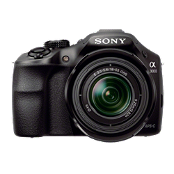

SONY E α3000
Da a tus fotografías un aspecto profesional. El encuadre automático del objeto analiza retratos, primeros planos o imágenes de sujetos en movimiento y los recorta para obtener imágenes perfectas.

SONY E α58
Da a tus fotografías un aspecto profesional. El encuadre automático del objeto analiza retratos, primeros planos o imágenes de sujetos en movimiento y los recorta para obtener imágenes perfectas.